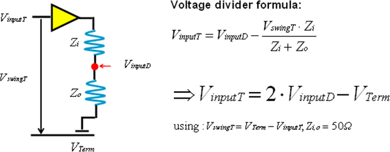

Level setups for driver sharing
In order to achieve a certain signal swing and offset at the device inputs you can calculate the driver output voltages required by using the formula shown in the figure below.

The voltage divider formula translates into an equation set that defines the driver high and low levels for each pin or pin group.
Example
The example below shows a snippet of a level equation file. In this example, the shared lines are grouped into address lines and command lines. The groups are terminated separately, requiring separate DPS pins to supply the termination voltages (Vterm) for the two line groups. This is recommended because you may want to adjust the levels independently from one another.
DPSPINS VTERM_CMD vout=Vterm_cmd ilimit = 3000 t_ms = 0 offcurr= act DPSPINS VTERM_ADDR vout=Vterm_addr ilimit = 3000 t_ms = 0 offcurr= act LEVELSET 1 "basic sharing" #daisy-chain shared PINS Command vil=2*(vil_cmd) - Vterm_cmd vih=2*(vih_cmd) - Vterm_cmd #daisy-chain shared PINS Address vil=2*(vil_addr) - Vterm_addr vih=2*(vih_addr) - Vterm_addr ...